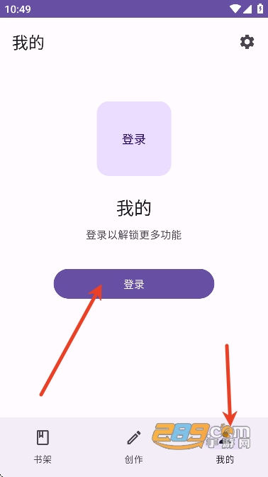

把 Gal Lop 嵌进我的 Gal 创作流水线——从素材入库到多线发布的一套链
以前做一个 Gal 短篇要跨三四个工具来回切，素材管理、分支逻辑、章节组织各管各的。现在 Gal Lop 把创作环节串成一条连续工作流，省掉了中间大量手动复制和版本同步。
我每周要做一到两个 Gal 小短篇，投给平台拿点流量分润。以前这套活是这样干的：素材用 Aseprite 画完放网盘，剧情分支在 Excel 里列变量表，章节大纲写在飞书文档，最后打开 Unity 搭节点——四个工具来回切，每改一次分支逻辑就要去 Excel 改变量、去 Unity 重连节点，来回两三次就嫌烦了。
后来从 Gal Lop官网 注册了账号嵌进去当核心创作环节，整条链被砍掉了中间至少两倍的手动操作。不是 Gal Lop 里哪个单一功能特别强，而是它把素材、节点、变量、章节这几个本来分散的创作元素收在同一条时间线上，上下游衔接的成本一下就没了。这篇就讲我怎么把它插进现有流程，以及哪些环节最容易断链。
旧流程到底卡在哪
说具体的痛点比空话有用：
- 素材换分辨率时，Aseprite 改完存网盘，Unity 里拉进来立绘位置偏了三格，每个用到这张立绘的节点都得调一遍。我做中短篇动辄上百节点，改一次四十分钟没了。
- 分支逻辑改条件阈值时，Excel 里的变量表改完，Unity 里条件节点要手动重敲每个运算符和变量名。Gal 变量名全是中文（好感度小樱、事件_告白成功），手打错一个字条件就永远不触发——我至少踩过三次这个坑。
- 章节加新段落时，飞书文档里改完大纲，Unity 里时间线要在中间插节点、重新分组、确认分支没断。一个不小心分支连错位置，预览跑到一半卡住，从头排查又半小时。
总结下来：跨工具版本同步 + 中文变量名手打 + 节点重排不影响分支，这三件事耗掉了我创作 60% 的体力，而实际写剧情、调分支逻辑只用了 40%。
新流程怎么接：Gal Lop 当创作中枢
整条新链还是保留 Aseprite 画素材和发布到平台这两头，中间全交给 Gal Lop。说清衔接点最重要。
上游：素材入库
Aseprite 画完的立绘和背景不再存网盘等 Unity 拉，而是直接拖进 Gal Lop 项目的素材库。第一次拖进去后，打开位置校准界面——Gal Lop 有个半透明的内置素材剪影当参考层，立绘拖到脚底和剪影对齐、缩放让头部对上，背景用标准网格对齐地平线。校准完选"应用到所有使用这个素材的节点"，以后不管在哪个节点里拉这张立绘，位置都是对的。

这个环节解决了旧流程里的第一个卡壳点：Aseprite 改完素材不用再手动去每个节点调位置。Gal Lop 的素材库和时间线是强绑定的，素材改了、校准过，所有引用它的节点自动跟着更新。
中枢：节点 + 变量 + 章节三合一
安装包从 官方下载 拿，移动端平板端都支持。进入 Gal Lop 编辑页面，上半部分是节点时间线，下半部分是属性面板。三个核心创作元素在这里合流：
- 节点：对话、CG、纯文本、选项、结局——五种类型覆盖了 Gal 创作的全部画面。在时间线空白处点一下就能加节点，长按拖拽排序，点节点右侧的连线区域画分支。
- 变量：条件式分支不再需要去 Excel 列表——Gal Lop 条件节点直接在界面里设判定条件，运算符是下拉选的（等于、大于等于、布尔真假），变量名从变量列表里复制粘贴不用手打。支持 AND / OR 复合条件，好感度分水岭、剧情收束点、可重玩内容这三种典型模式直接套。
- 章节：时间线里点"插入章节标记"就能分段，Gal Lop 会自动把后续节点归进这个章节。三种类型（普通、分支、结局章节）对应不同剧情阶段，章节之间还能设钩子（悬念、反转、角色关系变化）。
我做中篇时习惯边写边分章节——每写完一个剧情转折点就插一个章节标记，Gal Lop 自动处理好边界，不用等全部写完再回头划。预览模式还支持"从第 N 章开始预览"，测中间章节的分支不用从头跑一遍。
下游：发布环节
Gal Lop 自带发布入口——创作工作区找到项目 → 点发布 → 确认名称简介分类 → 提交。发布后还能继续编辑更新，读者看到的是最新版本。如果要导出到别的平台，Gal Lop 支持把节点数据导成 JSON，后续脚本可以直接转格式喂给 Unity 或 Ren'Py。
这步其实比以前手动打包 Unity 工程省了不少事——以前打包一次要半小时，现在导出 JSON 加脚本转换五分钟搞定。
最容易断链的两个环节，怎么处理
整条流程跑下来，有两个地方我一开始经常出问题，后来摸出了固定处理姿势。
断链点一：条件节点变量名拼写
Gal Lop 不自动补全变量名，Gal Lop文档 里专门提过这点，手打中文变量名（好感度小樱、事件_告白成功）时多打一个下划线或少一个字，条件就永远不触发，症状是预期走的分支没走到。这个坑我踩了至少三次才改过来——现在条件节点里的变量名一律从变量列表里复制粘贴，绝不用手敲。
极端值测试也必须做一遍：条件是 好感度_A >= 50，那就分别用 0（最低）、49（刚好不触发）、50（边界）、99（最高）四个值跑预览，确认每个值走的路径都对。Gal Lop 预览模式支持从任意节点开始，测条件分支时先在之前的选项节点把变量调到目标值，然后直接从条件节点开始预览就行，不用从头跑完。
断链点二：章节重排影响分支
我以前飞书改完章节大纲，去 Unity 插节点重排时间线，经常不小心把某个分支的连线扯断——预览跑到条件节点就卡住。Gal Lop 里章节标记是独立于节点的，章节内节点重排不会影响分支连线。但如果在章节标记之间插了新节点，Gal Lop 会自动把它归进后一个章节，这点要留意，插完确认一下新节点的章节归属对不对。
我现在每写完一个章节，都会用 Gal Lop 的"章节折叠"功能把已完成的章节折起来，时间线里只看当前正在写的章节，减少视线干扰，也不会误碰已完成章节里的分支连线。
效果和边界：省了多少、什么时候不划算
具体说量化效果：以前做一个 1~3 小时的中篇，素材调整 + 分支改条件 + 章节重排这三件事合计要花 4~6 小时。现在 Gal Lop 里这三件事串在一起做，总共 1~2 小时——少了 3~4 小时的跨工具手动同步。
但这条链也有边界。Gal Lop 目前的导出能力还比较受限，如果最终要投的平台是 Ren'Py 或 Unity 专属格式，导出 JSON 之后还得自己写转换脚本——这步 Gal Lop 替不了。另外如果是超长篇（5 小时以上、数十个分支路线），Gal Lop 的时间线视图会开始变挤，章节折叠虽然能缓解，但还是不如专业 Gal 引擎的可视化分支图直观。这种情况我还是会把 Gal Lop 当原型验证工具，逻辑跑通了再迁到 Ren'Py。
总的来说，对我这种每周一到两个中短篇的产出节奏，Gal Lop 嵌进创作链路后效率提升是实打实的——省掉的不只是时间，更重要的是创作节奏不被跨工具同步打断。写剧情、调分支、插章节，三个动作在同一条时间线上连续推进，这种心流状态才是生产力工具真正该给的东西。
这套 Gal 创作工作流的完整资料在三个仓库都能拿到——GitHub 上维护着开源文档和变量系统示例，Gitee 和 GitCode 做了镜像方便国内访问，章节模板也同步更新。